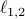
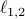
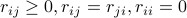

Localized Lasso
Introduction
The localized Lasso, which is suited for learning models that both are interpretable and have a high predictive power in problems with high dimensionality  and small sample size
and small sample size  . More specifically, we consider a function defined by local sparse models, one at each data point. We introduce sample-wise network regularization to borrow strength across the models, and sample-wise exclusive group sparsity (a.k.a.,  norm) to introduce diversity into the choice of feature sets in the local models. The local models are interpretable in terms of similarity of their sparsity patterns. The cost function is convex, and thus has a globally optimal solution. Moreover, we propose a simple yet efficient iterative least-squares based optimization procedure for the localized Lasso, which does not need a tuning parameter, and is guaranteed to converge to a globally optimal solution.
. More specifically, we consider a function defined by local sparse models, one at each data point. We introduce sample-wise network regularization to borrow strength across the models, and sample-wise exclusive group sparsity (a.k.a.,  norm) to introduce diversity into the choice of feature sets in the local models. The local models are interpretable in terms of similarity of their sparsity patterns. The cost function is convex, and thus has a globally optimal solution. Moreover, we propose a simple yet efficient iterative least-squares based optimization procedure for the localized Lasso, which does not need a tuning parameter, and is guaranteed to converge to a globally optimal solution.
Main Idea
The localized Lasso is given as the following form
where  is the pre-defined Graph information.
Features
Can select nonlinearly related features.
Highly scalable w.r.t. the number of features.
Convex optimization.
Download
Contact
I am happy to have any kind of feedbacks. E-mail:
Reference
Yamada, M., Takeuchi, K., Iwata, T., Taylor, J-S, & Kaski, S.
Localized Lasso for High-Dimensional Regression.
In Proceedings of the International Conference on Artificial Intelligence and Statistics (AISTATS2017). to appear.